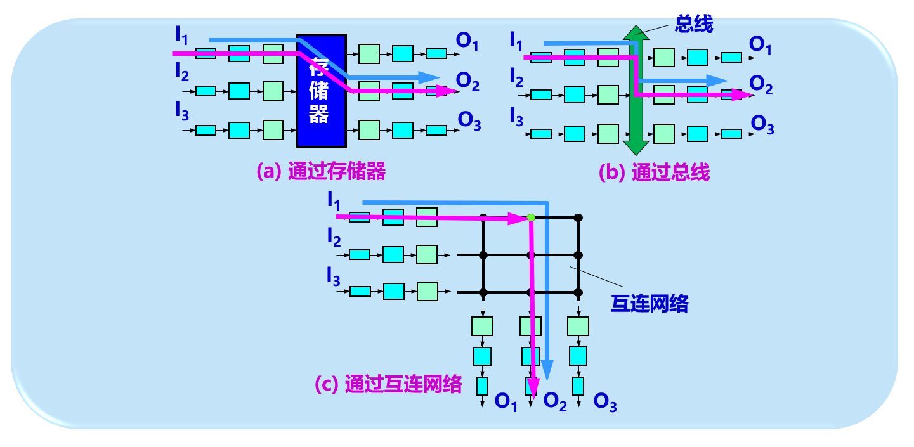

第四讲 网络层
一、功能概述
1. 网络层的地位与基本任务
flowchart TD A[应用层<br/>Application] -->|应用数据| B[传输层<br/>Transport] B -->|报文段 Segment| C[网络层<br/>Network] C -->|分组 / IP 包 Packet| D[数据链路层<br/>Data Link] D -->|帧 Frame| E[物理层<br/>Physical] subgraph 发送端主机 A B C D E end
网络层位于传输层之下、数据链路层之上，负责在发送主机与接收主机之间传送分组。
发送端将传输层交下来的报文段封装为网络层分组，接收端将收到的分组交给传输层。
路由器与主机都运行网络层协议，但二者承担的职责不同：
- 主机负责分组的发送与接收
- 路由器负责对经过的分组进行查表、选路与转发
网络层的核心任务可以概括为三类：
- 在异构网络之间提供统一的编址与互联机制。
- 在多跳环境中选择路径并完成逐跳转发。
- 为上层提供一种抽象的端到端分组传输服务。
2. 网络层设计目标
网络层向上服务于传输层，其设计目标并不是暴露具体路由器的型号、数量与连接方式，而是屏蔽底层互联细节，使传输层只面对一个统一的分组传输环境。围绕这一目标，网络层需要完成以下工作：
- 采用统一的网络层地址方案。
- 实现网络互联与路由选择。
- 在必要时参与拥塞控制与服务质量支持。
- 处理分组在网络中传输时的控制问题，例如差错报告、状态报告、超时控制等。
3. 网络层的两种服务模型
网络层可向传输层提供两类基本服务：虚电路服务与数据报服务。两者的差异不在于是否都使用分组交换，而在于网络是否在发送数据前建立连接状态，以及可靠性交由网络还是端系统来承担。
3.1 虚电路服务
虚电路服务先建立连接，再传送数据，最后拆除连接。通信双方并不真正占有一条物理专线，但网络会在沿途路由器中维护与该连接对应的状态，因此形成一条逻辑上的固定通路。
虚电路的关键特征如下：
- 建立连接时需要信令协议。
- 分组头中携带的是虚电路标识，而不是完整目的地址。
- 沿路径的每台路由器都要维护该连接的状态表项。
- 同一条虚电路上的分组通常沿同一路径转发。
- 网络可以在连接建立阶段预留带宽、缓存等资源，从而更容易进行流量控制、差错控制和服务质量保证。
虚电路不是给你一根真的专线，而是网络先为你这次通信建立一套‘大家都认这个编号、都知道该往哪转’的临时通路。
sequenceDiagram participant S as 源主机 participant R1 as 路由器1 participant R2 as 路由器2 participant D as 目的主机 S->>R1: 连接建立请求 R1->>R2: 转发建立请求并分配本地VC标识 R2->>D: 连接建立请求 D-->>R2: 接受连接 R2-->>R1: 返回建立确认 R1-->>S: 连接建立完成 S->>R1: 数据分组(VC标识) R1->>R2: 数据分组(可能替换为新的VC标识) R2->>D: 数据分组 S->>R1: 拆除请求
虚电路是一种逻辑连接而非物理连接。它与电话网中的电路交换相似，但并未为每个会话独占一条真实线路，分组仍然采用存储转发方式前进。
3.2 数据报服务
数据报服务不建立连接。每个分组都携带完整的目的地址，并在经过每一跳路由器时独立进行转发决策。来自同一应用流的分组可以走不同路径，也可能发生失序、丢失、重复或超时。
互联网采用的是无连接、尽最大努力交付的数据报服务。
其核心思想是：
- 网络层尽量保持简单。
- 路由器不维护端到端连接状态。
- 可靠交付、流量控制、差错恢复等复杂功能主要交给端系统中的传输层处理。
flowchart LR S[源主机] -->|分组1| R1 S -->|分组2| R2 R1 --> R3 R2 --> R3 R3 --> D[目的主机]
数据报服务具有两面性。其优点在于实现简单、扩展性强、故障后可灵活改路，适合大规模异构互联；其代价在于分组头开销较大，网络内可能出现失序，且必须使用生存时间字段限制分组在网络中的存活范围。互联网通过 TTL 控制分组寿命，分组每经过一台路由器，TTL 就减 ；减到 时即被丢弃。
3.3 两种服务模型的对比
| 比较维度 | 虚电路服务 | 数据报服务 |
|---|---|---|
| 建立连接 | 需要 | 不需要 |
| 分组头信息 | 携带短 VC 标识 | 携带完整目的地址 |
| 路由方式 | 同一连接通常沿固定路径 | 每个分组独立选路 |
| 网络内部状态 | 路由器维护连接状态 | 路由器通常不维护端到端状态 |
| 顺序性 | 分组通常按序到达 | 可能失序 |
| 可靠性承担者 | 可由网络或端系统负责 | 主要由端系统负责 |
| 资源控制 | 容易预留资源与做 QoS | 更强调尽力而为 |
从工程上看，互联网选择数据报服务，是为了在大规模、异构、不断变化的环境中保持网络核心的简洁性，把复杂性尽量留在边缘主机。
二、功能：路由器与转发
1. 路由器的职责
路由器是典型的网络层设备，其基本职责可以概括为 ” 连接不同网络 ” 和 ” 为分组选择合适的传输路径 “。围绕这一职责，路由器内部存在两类性质不同的工作：
- 转发：依据本地转发表，把到达输入端口的分组送到适当的输出端口。
- 路由选择：依据路由算法与路由协议，计算从源到目的的路径，并据此构造或更新路由表。
转发是本地、逐分组、快速执行的动作；路由选择是面向全网、相对较慢、依赖拓扑信息交换的控制过程。
2. 数据平面与控制平面
路由器的内部逻辑可以从另一个角度划分为数据平面与控制平面。
- 数据平面负责分组转发，是每台路由器本地执行的高速功能。
- 控制平面负责路径计算与路由发布，决定端到端路径如何形成。
传统互联网中，控制平面分布在各台路由器内，通过 RIP、OSPF、BGP 等协议彼此交换信息；在软件定义网络中，控制平面则可以逻辑集中到远程控制器，由控制器向设备下发转发规则。
flowchart TB subgraph 控制平面 A[路由协议] B[路由算法] C[路由表生成与更新] end subgraph 数据平面 D[输入端口] E[查表] F[交换结构] G[输出端口] end A --> B --> C C --> E D --> E --> F --> G
3. 典型路由器结构
典型路由器可分为两大部分：
- 路由选择部分：也称控制部分，其核心是路由选择处理机。它运行路由协议，与相邻路由器交换路由信息，并据此生成和维护路由表。
- 分组转发部分：包括输入端口、交换结构和输出端口。它根据由路由表导出的转发表执行逐分组处理。
路由表与转发表在教学中常被合并讨论，但工程上两者并不完全等同。路由表更接近控制平面的逻辑结果，而转发表是数据平面为了高速查表而组织出的本地表项结构。
4. 输入端口与输出端口
输入端口内部包含物理层、数据链路层和网络层处理模块。它完成的工作包括：
- 从线路接收比特流并恢复成帧。
- 去掉链路层首部与尾部。
- 将得到的网络层分组送入输入队列。
- 执行查表与转发决策。
输出端口也包含物理层、数据链路层和网络层处理模块。它完成的工作包括：
- 接收交换结构送来的分组。
- 在输出缓存中排队。
- 加上链路层首部和尾部。
- 由物理层发往外部链路。
flowchart TD A[输入链路] --> B[接收处理<br/>物理层 + 链路层] B --> C[输入队列] C --> D[查表转发] D --> E[交换结构] E --> F[输出队列] F --> G[发送处理<br/>链路层 + 物理层] G --> H[输出链路]
输入队列与输出队列都可能成为瓶颈。当到达速率持续超过处理速率或发送速率时，缓存会逐渐耗尽，最终产生队列溢出和分组丢失。
5. 交换结构
交换结构负责把分组从输入端口搬移到目标输出端口，是路由器内部的关键构件。常见实现方式有三种。
感觉像是老式电话的接线员。

5.1 经内存交换
分组先复制到系统内存，再从内存复制到输出端口。其优点是实现简单，缺点是交换速度受内存带宽限制。若总线速度为 ，则一次转发通常需要一次写入和一次读出，吞吐量上限约为 。
5.2 经总线交换
分组通过共享总线在输入口与输出口之间传输。实现较简单，但多个端口竞争同一总线带宽，交换速率受总线能力限制，适合接入网或企业网规模。
5.3 经交换网络交换
采用纵横交换结构或更一般的互连网络，使多个输入与多个输出之间可并行建立连接，从而突破单总线瓶颈，适合高性能路由器。
flowchart TB A[输入端口集合] --> B{交换结构} B --> C[经内存交换] B --> D[经总线交换] B --> E[经交换网络交换] E --> F[纵横交换结构 / 互连网络 / 阵列交换]
在纵横交换结构中，若多个输入同时希望发往同一输出，则只有一个可成功接通，其余分组必须在输入侧等待。
6. 高速交换中的排队与阻塞
当交换速率低于总输入速率时，输入端会积压分组。此时会出现一种典型现象：线路前部阻塞（HOL, Head-of-the-Line Blocking）。其本质是：排在输入队列首部的分组因为目标输出繁忙而无法通过，结果把后面本可发往其他空闲输出的分组也一并阻塞。
为克服 HOL 阻塞，可在输入端为不同输出分别设置独立队列，即虚拟输出队列（VOQ）。调度器在每个时隙从各输入端的多个队列中挑选一组互不冲突的输入—输出匹配，从而提高吞吐量。
flowchart TD A[单一输入FIFO] --> B[队首分组堵塞] B --> C[后续分组无法越过] D[VOQ: 按输出分别排队] --> E[调度器匹配] E --> F[多个不冲突传输并行进行]
课件进一步强调了两类手段：
- 优先级机制：把高优先级业务放入更高优先级队列，优先进入交换结构。
- 加速：让交换结构以高于外部链路线速运行。对于配置了 VOQ 的交换结构，较低倍数的加速即可显著降低排队时延。
7. 缓冲区设计
缓存用于吸收业务突发和端口速率不匹配。课件给出了经典经验估计：
其中 为平均缓存量， 为平均往返时延， 为链路容量。该公式反映了缓存与端到端反馈回路时延之间的关系：反馈越慢，为维持链路持续利用，路由器就越需要缓存更多尚未被端系统感知的在途数据。
三、功能：路由算法与协议
1. 路由选择问题的基本形式
路由选择的目标是：根据目的地址，为分组找到一条从源到目的的路径。对于数据报网络，这个动作在每个分组到来时依赖转发表完成；对于虚电路网络，则在建立连接时一次性选好路径。
判断一个路由算法是否 ” 好 “，通常要看以下维度：
- 正确性：能否找到可达路径。
- 简洁性：实现与维护是否容易。
- 稳健性：面对故障与高负载时能否继续工作。
- 公平性：是否避免长期偏袒部分流量。
- 最优性：是否接近所设定的代价目标，例如最小跳数、最小时延或最小代价。
- 有效性：控制开销是否可接受。
这里的 ” 最优 ” 并非绝对。网络规模、拓扑变化速度、管理目标和策略约束不同，最佳算法选择也会不同。
2. 图模型与路径代价
路由问题常用带权图 描述，其中 是路由器结点集合， 是链路集合。若链路 的代价为 ，则一条路径的总代价是各段链路代价之和。路由算法的任务就是在图上找到从源结点到目的结点的最小代价路径。
3. 泛洪算法
泛洪不要求结点预先知道网络拓扑。源结点把分组发送给所有邻居，任一中间结点在收到分组后，再向除来路之外的所有链路转发。因此，分组会沿所有可能路径扩散，最终其多个副本可到达目的结点。
泛洪的特点是：
- 不依赖全网拓扑信息。
- 鲁棒性极强，链路或节点故障时仍有较大概率到达目的地。
- 若控制得当，可以获得最小跳数路径。
- 代价是复制过多、负载很高，因此通常不适合作为普通数据转发机制。
为避免无限复制，泛洪常配合两类约束：
- 给每个分组分配唯一序号，结点只转发第一次看到的副本。
- 在分组中加入跳数或寿命字段，限制扩散范围。
flowchart TD S[源节点] --> A[邻居1] S --> B[邻居2] A --> C[继续向其他邻居转发] B --> D[继续向其他邻居转发] C --> T[目的节点可能收到多个副本] D --> T
4. Dijkstra 最短路径算法
Dijkstra 算法属于链路状态类算法。它要求每个路由器先获得整个网络的拓扑与链路代价信息，然后在本地独立计算从本结点到所有其他结点的最小代价路径树。
算法维护三个核心量：
- ：从源结点到结点 的当前最小代价估计。
- ：在当前最短路径上，结点 的前驱结点。
- ：最短路径已确定的结点集合。
算法过程是反复从未确定结点中选出 最小者加入 ，再利用它去松弛相邻结点的距离估计，直到全部结点都被处理。
flowchart TD A["初始化: N'={源节点}"] --> B["计算各邻居的初始D(v)"] B --> C[从未处理结点中选取D最小者w] C --> D[将w加入N'] D --> E["更新所有与w相邻结点的D(v)"] E --> F{是否全部处理完?} F -- 否 --> C F -- 是 --> G[得到最短路径树与转发表]
Dijkstra 的优点是收敛快、结果稳定、每个结点可独立计算；缺点是需要维护全网拓扑信息，控制信息分发与数据库同步代价较高。
5. Bellman-Ford 与距离矢量算法
距离矢量算法不要求每个结点掌握完整拓扑。每个结点只知道：
- 自己到邻居的链路代价 ；
- 邻居通告给自己的到各目的结点的距离估计 。
其基本递推关系是：
其中， 在 的所有邻居中取值。对某一目的结点 ，若某个邻居 使得上式取到最小值，则 发往 的下一跳就是 。
距离矢量算法的特点是：
- 分布式：只与邻居交换信息。
- 异步：不要求全网同步计算。
- 迭代式：当链路代价变化或收到邻居更新时重新计算。
- 渐进收敛：好消息传得快，坏消息传得慢。
flowchart LR A[邻居1的DV] --> X[结点x] B[邻居2的DV] --> X C[邻居3的DV] --> X X --> D[按Bellman-Ford方程更新Dx] D --> E[若Dx变化则通知邻居]
无穷计算问题
距离矢量算法的经典弱点是 ” 坏消息传得慢 “，即某条路失效后，相邻路由器可能互相误以为对方仍然掌握一条更长但可达的路径，从而使距离估计不断增加，出现 ” 计数到无穷 ” 现象。
常用缓解方法包括：
- 设定一个较小的 ” 不可达 ” 上界，例如 RIP 中用 16 表示不可达。
- 使用水平分割、毒性反转等技术，避免把从某邻居学到的最佳路径再通告回该邻居。
6. 从路由算法到路由协议
仅有算法还不足以支撑真实互联网。真实网络还需要考虑两条更高层的准则。
6.1 自适应性
静态路由只适合拓扑较稳定、变化缓慢的场景。互联网链路状态、负载和可达性会不断变化，因此实际中更需要动态、自适应的协议机制。
6.2 分层次路由
互联网规模极大，不可能要求所有路由器都知道所有目的地址的精细路径，也不可能让所有组织公开自己的内部拓扑。因此互联网采用自治系统划分，在域内与域间分别使用不同路由协议。
flowchart LR A[自治系统AS内部] -->|IGP| B[RIP / OSPF 等] C[自治系统之间] -->|EGP| D[BGP]
7. RIP
RIP 是典型的距离矢量域内路由协议。它以跳数作为距离度量，周期性向邻居发送路由表更新。RIP 的核心更新思想是：收到邻居 的 RIP 报文后，把报文中所有表项的下一跳改写为 ，并将距离加 ，然后与本地路由表逐项比较、更新。
RIP 的基本规则包括：
- 目的网络原来不存在，则加入路由表。
- 若下一跳相同，则用新信息替换旧信息。
- 若新路径跳数更小，则更新。
- 若持续 分钟未收到某邻居的更新，则把经该邻居的路由记为不可达，距离置为 。
RIP 的工程特点如下：
- 使用 UDP 520 端口。
- RIPv1 用广播，RIPv2 用组播地址 224.0.0.9。
- 最大可达距离为 15 跳，因此只适合中小型网络。
- RIPv1 是有类路由协议，RIPv2 支持无类编址与掩码信息。
RIP 的优势是实现简单；局限在于收敛慢、跳数度量粗糙、网络规模受限。
8. OSPF
OSPF 是典型的链路状态域内路由协议。它用链路状态扩散而不是距离矢量交换来同步网络信息，每台路由器据此建立一致的链路状态数据库，再运行 Dijkstra 算法计算最短路径树。
OSPF 的基本工作链条包括：
- 发现邻居。
- 测量链路代价。
- 生成链路状态分组。
- 把链路状态分组可靠地扩散到整个自治系统。
- 在本地重建拓扑并重新计算路由。
sequenceDiagram participant R1 as 路由器1 participant R2 as 路由器2 participant R3 as 路由器3 R1->>R2: Hello R2->>R1: Hello R1->>R2: 链路状态描述 R2->>R1: 链路状态请求 R1->>R2: 链路状态更新 R2->>R1: 链路状态确认 R2->>R3: 可靠扩散更新
OSPF 的主要特点包括：
- 直接运行在 IP 之上，而非通过 TCP 或 UDP。
- 可根据链路变化快速触发更新，也会周期性刷新数据库。
- 支持认证，安全性优于简单 DV 协议。
- 允许多条等代价路径并存。
- 可支持单播和多播。
- 在大规模网络中可采用分层 OSPF。
分层 OSPF
分层 OSPF 把自治系统划分为多个区域，并通过骨干区域互联。区域内维护细粒度链路状态，区域边界路由器负责把本区域可达性进行汇总后向骨干传播，从而降低数据库规模与更新开销。
flowchart TD subgraph Area1[区域1] A1[内部路由器] end subgraph Backbone[骨干区域] B1[骨干路由器] end subgraph Area2[区域2] A2[内部路由器] end A1 --> ABR1[区域边界路由器] ABR1 --> B1 B1 --> ABR2[区域边界路由器] ABR2 --> A2
9. LS 与 DV 的比较
链路状态与距离矢量的差异，本质上是 ” 全局视图的本地计算 ” 与 ” 局部信息的分布式迭代 ” 之分。
| 方面 | LS | DV |
|---|---|---|
| 信息来源 | 获取全网拓扑与链路状态 | 只从邻居接收距离估计 |
| 计算方式 | 本地运行最短路径算法 | 依据邻居信息迭代更新 |
| 收敛特性 | 较快且稳定 | 可能较慢，存在计数到无穷 |
| 控制开销 | 链路变化时需向全网扩散 | 只在邻居间交换 |
| 鲁棒性 | 单点计算错误较不易扩散 | 错误可能在邻居间放大 |
10. 自治系统与 BGP
互联网不可能在单一平面上统一路由，因而引入自治系统（AS, Autonomous System）的概念。自治系统是由同一管理域控制、共享相似路由策略、内部运行统一域内协议的一组路由器集合。每个 AS 具有唯一的自治系统编号。
在 AS 内部使用 IGP，如 RIP、OSPF；在 AS 之间使用 BGP。BGP 设计的重点不是全网最短路径，而是在策略约束下寻找一条可达且不成环的较好路径。
10.1 BGP 的基本机制
BGP 通过两个对等路由器之间的半永久 TCP 连接交换路由信息。它既有 eBGP，也有 iBGP：
- eBGP：在相邻 AS 之间传播可达前缀。
- iBGP：在同一 AS 内部传播已学到的外部可达信息。
flowchart LR subgraph AS1 A1[边界路由器] A2[内部路由器] end subgraph AS2 B1[边界路由器] B2[内部路由器] end subgraph AS3 C1[边界路由器] end A1 <-->|eBGP| B1 B1 <-->|eBGP| C1 A1 <-->|iBGP| A2 B1 <-->|iBGP| B2
10.2 路由与路径属性
BGP 通告的不是单纯的 ” 距离 “，而是 ” 前缀 + 属性 ” 的路由。重要属性包括：
- AS-PATH：通告路径经过的 AS 列表。它既用于策略选择，也用于环路检测。
- NEXT-HOP：到达该前缀时应先发往的下一跳路由器。
因此，BGP 是强策略驱动的路由协议。管理员可以依据导入策略和导出策略决定接受哪些路由、拒绝哪些路由、以及把哪些路径再通告给哪些邻居。
10.3 BGP 报文类型
BGP 对等体通过 TCP 连接交换四类基本报文：
- OPEN：建立会话并认证对等体。
- UPDATE：通告新路径或撤销旧路径。
- KEEPALIVE：保持会话活跃。
- NOTIFICATION：报告错误并关闭连接。
11. 域内与域间为何采用不同路由
域内与域间路由采用不同协议，原因主要有三点：
- 策略需求不同：AS 之间必须体现商业和管理策略，而 AS 内部通常由单一管理者控制，更强调性能与收敛。
- 规模不同：分层路由能有效减小路由表和控制消息规模。
- 目标不同：域内更关心性能与最优路径，域间更关心策略、可达性与稳定性。
四、系统：网络互联
1. 互联网与虚拟互连网络
互联网本质上是 ” 网络的网络 “。多个不同类型的物理网络通过路由器互连后，借助统一的 IP 协议形成一个逻辑上的统一网络，即虚拟互连网络。所谓 ” 虚拟 “，并不是说网络不存在，而是说不同底层网络的异构性被 IP 层屏蔽了。对于上层主机而言，它们像是在同一个统一网络中通信。
flowchart TD N1[物理网络1] --> R1[路由器] R1 --> N2[物理网络2] N2 --> R2[路由器] R2 --> N3[物理网络3] N3 --> R3[路由器] R3 --> N4[物理网络4] V[统一的IP层视图] --- N1 V --- N2 V --- N3 V --- N4
只有使用路由器进行互连时，才称得上真正意义上的网络互联。转发器、网桥和交换机只是把局部网络扩展得更大，本质上仍属于同一个网络。
2. 网络层协议族
IPv4 网络层不仅包括 IP 本身，还包括若干辅助协议：
- IP：负责编址、路由与转发。
- ARP：负责同一局域网内的 IP 地址到硬件地址映射。
- ICMP：负责差错报告与网络状态探测。
- IGMP：负责组播组成员管理。
3. IPv4 地址基础
3.1 地址的角色
IP 地址是互联网上主机或路由器接口的唯一标识。需要特别强调的是，IP 地址标识的不是 ” 整个设备 “，而是 ” 设备连接到某条链路的接口 “。因此，路由器由于连接多个网络，往往具有多个 IP 地址。
3.2 分类地址与两级结构
IPv4 地址长度为 32 位。传统分类编址把地址划分为 A、B、C、D、E 五类，其中 A、B、C 类用于单播网络，D 类用于组播，E 类保留。
在分类地址体系下，IPv4 地址采用两级结构：
这种两级结构的意义有二：
- 地址管理机构只需分配网络号，网络内部自行分配主机号。
- 路由器转发时只需关心目的主机所在网络，而无需为每台主机维护路由。
3.3 地址的一些重要性质
- IP 地址具有分级结构。
- IP 地址标识的是接口而非整机。
- 通过网桥或交换机连接起来的多个局域网若属于同一网络，则共享同一个网络号。
- 网络号相同的网络，无论地理范围大小，在逻辑上都是平等的。
3.4 特殊地址
| 网络号 | 主机号 | 作为源地址 | 作为目的地址 | 含义 |
|---|---|---|---|---|
| 0 | 0 | 可以 | 不可以 | 本网络上的本主机，常见于尚未获取正式地址时 |
| 0 | Host-id | 可以 | 不可以 | 本网络上的某主机 |
| 全 1 | 全 1 | 不可以 | 可以 | 本网络广播 |
| Net-id | 全 1 | 不可以 | 可以 | 对某网络内所有主机广播 |
| 127 | 非全 0 且非全 1 | 可以 | 可以 | 环回测试 |
4. 点分十进制记法
为了提高可读性，IPv4 地址通常把 32 位按 8 位一组写成十进制，并用点分隔。例如二进制地址 10000000 00001011 00000011 00011111 写成点分十进制即为 128.11.3.31。
5. 直接交付、间接交付与默认路由
当主机 要向主机 发送分组时，先判断 是否与自己处于同一网络。若属于同一网络，则进行直接交付；否则进行间接交付，即先把分组发给本地某个路由器，再由路由器继续转发。
判断依据是双方的网络地址是否相同。这个判断由发送主机完成，而不是由网络中的路由器代劳。
flowchart TD A[发送主机] --> B{目的IP是否与本机同网?} B -- 是 --> C[ARP解析目标MAC并直接发送] B -- 否 --> D[ARP解析默认网关MAC] D --> E[先交给路由器]
当一台主机或某个边缘网络只有很少的对外连接时，配置默认路由可以显著减小本地路由表规模。凡是不属于已知直连网络的目的地址，都可先发给默认路由器，由其继续转发。
6. IP 地址与硬件地址的分工
网络层及以上使用 IP 地址识别通信端点，链路层则必须使用硬件地址来把分组装入帧并送到下一跳设备。因此，IP 地址解决的是跨网络的统一编址问题，硬件地址解决的是单跳链路上的实际投递问题。二者并不替代，而是分层协作。
7. ARP
ARP 只在同一局域网或子网上工作，用于根据目标 IP 地址解析目标设备的 MAC 地址。其工作流程如下：
- 主机先查本地 ARP 高速缓存。
- 若已有映射，则直接使用对应的 MAC 地址封装帧。
- 若没有映射，则广播 ARP 请求分组。
- 目标主机收到后单播返回 ARP 响应分组。
- 发送端把学到的 IP–MAC 绑定写入缓存。
sequenceDiagram participant A as 主机A participant LAN as 局域网 participant B as 主机B A->>LAN: 广播ARP请求(B的IP, B的MAC未知) B-->>A: 单播ARP响应(B的IP, B的MAC) A->>B: 使用B的MAC发送数据帧
ARP 请求只在本地广播域内传播，路由器不会转发 ARP 请求。因此，若目的主机不在本地网络，ARP 并不是去解析远端主机的 MAC，而是去解析下一跳路由器接口的 MAC 地址。
ARP 高速缓存的意义在于减少广播次数，降低局域网负担。并且，请求报文中自带发送方地址映射，对端收到请求时也可顺便学习这条映射。
8. 路由器的分组转发算法
在最基本的形式下，路由器处理收到的 IP 分组时，可以按以下逻辑工作：
- 取出目的 IP 地址 ，求出对应目的网络地址 。
- 若 与某直连网络匹配，则直接交付。
- 若存在针对目的主机 的特定路由，则按该路由转发。
- 否则查找针对目的网络 的网络路由。
- 若仍找不到，则查默认路由。
- 若连默认路由也不存在，则用 ICMP 报告转发出错。
9. 子网划分与子网掩码
分类地址在实践中往往过粗。A 类或 B 类网络可能拥有过多主机，既不利于地址利用，也会带来 ARP 广播规模过大等问题。因此引入了子网划分。
子网划分的本质是：从原主机号中借出若干位，作为子网号，于是地址结构变为三级：
子网划分是组织内部的事情。对外部互联网而言，该组织仍表现为一个统一网络；只有到达该组织边界路由器后，才再依据子网号继续细分转发。
子网掩码用于从 IP 地址中提取网络号与子网号。它满足：
- 长度固定为 32 位。
- 左侧连续的 对应网络号与子网号。
- 右侧连续的 对应主机号。
因此：
子网掩码是路由表中的关键属性。路由器不仅要记录目的网络，还必须记录对应掩码，否则无法正确判断匹配关系。
使用子网时的转发逻辑
在存在子网的情况下，路由器不能仅凭分类规则推导网络地址，而必须结合路由表中每一项的掩码逐项匹配目的地址。也正因此，子网划分推动了后续 CIDR 和最长前缀匹配的普及。
10. CIDR 与路由聚合
10.1 引入背景
子网划分虽缓解了地址浪费和路由表膨胀问题，但互联网在 1990 年代初仍面临三大压力：
- B 类地址即将耗尽。
- 主干网路由表规模急剧膨胀。
- 整体 IPv4 地址空间将走向枯竭。
因此发展出了无分类域间路由选择 CIDR。CIDR 取消了 A/B/C 类边界，也不再强调传统意义上的 ” 网络号 + 子网号 ” 划分，而是统一使用网络前缀。
10.2 两级无分类结构
CIDR 的地址结构可写为：
它采用斜线记法，例如 128.14.32.0/20 表示前 20 位是网络前缀。一个 CIDR 地址块中包含所有拥有相同前缀的连续地址。
10.3 路由聚合与超网
CIDR 的一个重要优势是可把多个原本分散的网络聚合成一个更大的前缀块，称为路由聚合或构成超网。路由聚合能显著减少路由表规模和路由更新数量，是互联网可扩展性的关键机制之一。
10.4 最长前缀匹配
使用 CIDR 后，一条目的地址可能同时匹配多条前缀。例如某地址既落在一个较大的 /22 块中，也落在一个更具体的 /25 块中。此时必须采用最长前缀匹配原则：匹配位数越长，说明路由越具体，应优先选择。
flowchart TD A[收到目的地址D] --> B[在路由表中寻找所有匹配前缀] B --> C{是否有多个匹配项?} C -- 否 --> D1[使用该项] C -- 是 --> E[选择前缀最长者] E --> F[转发到对应下一跳]
10.5 二叉线索查表
当路由表规模很大时，线性查找效率过低。工程上常把前缀组织成二叉线索（binary trie）等层次结构，自根向下按目的地址的比特逐层匹配，从而加快最长前缀查找。二叉线索的深度最多为 32 层，对应 IPv4 地址的 32 位。
11. IPv4 分组格式
IPv4 数据报由首部和数据两部分组成。固定首部长度为 20 字节，可选字段会使首部更长。几个对理解机制最重要的字段如下：
- 版本：IPv4 为 4。
- 首部长度：以 4 字节为单位。
- 服务类型：描述实时性、可靠性、吞吐量等倾向。
- 总长度：首部与数据之和。
- 标识：用于分片重组时识别原始数据报。
- 标志：包括 DF 与 MF 等控制位。
- 片偏移：表示该分片在原始数据报中的相对位置，以 8 字节为单位。
- TTL：限制分组在网络中的生存范围。
- 协议：指出上层承载的是 TCP、UDP 等哪种协议。
- 首部校验和：仅校验 IP 首部。
- 源地址 / 目的地址：标识通信两端接口。
12. 分片与重组
链路层的 MTU 限制了单个 IP 分组能够承载的最大长度。当 IP 数据报长度超过下一跳链路的 MTU 时，就可能需要分片。
12.1 透明分段与非透明分段
- 透明分段：中间路由器负责分段，也负责后续重组。这样会显著增加中间节点开销。
- 非透明分段：中间路由器只负责分段，最终由目的主机统一重组。这是 IPv4 中更常见的思路。
12.2 关键字段
- DF（Don’t Fragment）：为 1 时表示禁止分片。
- MF（More Fragment）：为 1 表示后面还有分片。
- 片偏移：以 8 字节为单位，因此除最后一个分片外，各分片数据长度通常要是 8 的整数倍。
flowchart LR A[原始IP数据报] --> B{长度 > MTU?} B -- 否 --> C[直接发送] B -- 是 --> D[切分为多个分片] D --> E[复制首部并修改标识/DF/MF/片偏移] E --> F[目的主机按标识与偏移重组]
课件还指出，避免分片的另一条思路是由发送端先发现路径上的最小 MTU，再控制分组长度。这能减少中间网络分片，但路径发现本身会带来复杂性。
13. 首部校验和
IPv4 使用反码算术计算首部校验和。路由器每转发一次分组，都要因为 TTL 等字段变化而重新计算首部校验和。其本质是对首部按 16 位求和并取反，用于发现首部比特差错。
五、其他功能
1. DHCP：动态主机配置
静态分配地址要求网络管理员为每台主机人工配置 IP 地址、掩码、默认路由和 DNS 服务器，不仅管理成本高，而且设备离线时地址也无法被其他设备复用。DHCP 提供了自动化的动态地址分配机制。
DHCP 基于 UDP 工作，客户端使用 68 端口，服务器使用 67 端口。主机启动时尚未拥有正式地址，因此通常以源地址 0.0.0.0、广播方式发出请求。
1.1 基本交互过程
DHCP 经典流程可概括为 Discover、Offer、Request、ACK 四步：
sequenceDiagram participant C as 客户端:68 participant S as DHCP服务器:67 C->>S: DHCP DISCOVER (广播) S-->>C: DHCP OFFER C->>S: DHCP REQUEST S-->>C: DHCP ACK
服务器可为客户端分配的不只是 IP 地址，还包括：
- 子网掩码
- 默认网关
- DNS 服务器
- 地址租期
租期机制使地址能被回收再利用。客户端在租期进行中可在 等时刻请求续租，若原服务器不可达，也可进一步尝试重新绑定。
1.2 DHCP 中继
DHCP 请求本质上只是 UDP 负载。若客户端与服务器不在同一子网，局域网广播无法直接跨越路由器，因此需要 DHCP 中继代理。中继把客户端广播收到的 DHCP 报文转成单播，转发给远端 DHCP 服务器，从而使多个子网可以共享同一台服务器。
2. 专用地址与 NAT
为缓解 IPv4 地址短缺，RFC 1918 规定了三段专用地址空间，只在内部网络中使用，不能作为公网中的可达目标：
10.0.0.0到10.255.255.255172.16.0.0到172.31.255.255192.168.0.0到192.168.255.255
专用地址主机若要访问外网，就需要通过 NAT 路由器。
2.1 NAT 的基本机制
NAT 路由器至少拥有一个公网地址。内部主机以私有地址发出的报文在穿越 NAT 时，会被改写源地址；为了允许多个内网主机共享同一个公网地址，NAT 通常还会联合使用传输层端口号，形成地址与端口的映射表项。
flowchart TD A[内网主机 A<br/>192.168.1.10:5000] N[NAT 路由器<br/>公网 IP: 1.2.3.4] Y[外部服务器<br/>8.8.8.8:80] A -->|发出前<br/>192.168.1.10:5000 → 8.8.8.8:80| N N -->|改写后<br/>1.2.3.4:40001 → 8.8.8.8:80| Y Y -->|返回<br/>8.8.8.8:80 → 1.2.3.4:40001| N N -->|查表还原<br/>8.8.8.8:80 → 192.168.1.10:5000| A
NAT 在改写地址和端口后，还必须重新计算 IP 首部以及 TCP/UDP 首部中的检验和。
2.2 NAT 的工程意义与边界
NAT 的直接收益是节省公网地址，但它也引入了一些边界问题：
- 端到端可达性被打破，内网主机默认不能被公网主动寻址。
- 某些应用若只记录 IP 地址而忽略端口号，将无法正确识别 NAT 后的多个内部用户。
- 应用、传输层与网络层之间的耦合加深，系统设计复杂度上升。
课件中的 ” 聊天系统 ” 例子正体现了这一点：若服务器只记录用户 IP，而不记录端口，就无法区分多个共享同一公网地址的客户端。
3. 隧道技术
隧道技术是把一种网络层协议封装到另一种协议的数据部分中，通过中间网络转发，到达出口后再解封装。中间路由器并不理解被封装的内部协议，只把外层分组当作普通分组处理。
flowchart TD A[原始分组] --> B[入口路由器封装] B --> C[外层网络中按外层协议转发] C --> D[出口路由器解封装] D --> E[恢复原始分组并继续转发]
隧道技术常见于以下场景：
- IPv6 子网跨 IPv4 网络互联。
- 多播网络跨不支持多播的网络互联。
- 虚拟专用网 VPN。
- 移动 IP 中的转交。
VPN
VPN 使用隧道技术把企业内部原始分组封装进公网可转发的数据报中，并可结合加密机制形成 ” 逻辑上的专用网络 “。公网负责转送外层分组，而不会暴露内部地址结构与内部业务内容。
4. 分组分段与路径 MTU
分组长度受 MTU 影响，而 MTU 又与链路层技术、网卡驱动、协议要求以及误码率、重传代价等因素有关。分组越大，头部开销越小，但一旦出错，重传代价越高；分组越小，则交互开销增大。
课件从工程角度强调：透明分段会把重组负担推给路由器，代价较大；非透明分段则把重组负担放到目的主机，更适合互联网这种端系统能力较强、核心网络追求简洁的体系。
5. 网络控制与拥塞
当网络负载过高时，路由器缓存增长、信道利用率下降、丢包率上升，就出现了拥塞。网络层可以从以下几种方式参与流量调节。
5.1 抑制报文
拥塞路由器向源主机发送 ICMP 抑制报文，请求其降低速率。这种方式能传达拥塞信息，但反馈路径较长、反应较慢。
5.2 逐跳后压
在拥塞路径上由路由器向上游路由器逐跳施加减速压力，缓解更快，但会占用中间设备的缓存资源。
5.3 RED
RED（Random Early Detection）不等到缓存尾部溢出才丢包，而是根据平均队列长度提前随机丢弃部分新到分组，从而避免缓存长期满载和 TCP 同步拥塞现象。
平均队列长度可写为：
其中 为当前队列长度， 为权重因子。根据 与阈值 、 的关系，RED 分三段工作：
- 若 ，分组直接入队。
- 若 ，新包直接丢弃。
- 若 ，按概率丢弃。
课件给出了中间区间的概率表达式：
6. ICMP
ICMP 是网络层控制协议，用于在主机与路由器之间传递差错与状态信息。它并不是独立于 IP 的平级协议，而是封装在 IP 数据报的数据部分中进行传输。
ICMP 的典型用途包括：
- 报告主机、网络、端口、协议不可达。
- 报告 TTL 超时。
- 提供回显请求 / 回显应答，以支持 Ping。
6.1 Traceroute
Traceroute 利用 TTL 逐步递增的 UDP 探测报文来发现从源到目的的路径。其逻辑是：
- 发送 TTL 为 1 的 UDP 探测报文。
- 第一跳路由器把 TTL 减为 0，丢弃报文并返回 ICMP 超时报文。
- 源主机记录返回报文的来源地址和 RTT。
- 再发送 TTL 为 2、3、4 … 的探测报文，逐跳揭示后续路由器。
- 当探测报文终于到达目的主机时，由于其目的端口通常故意设为不可达端口，目的主机返回 ICMP 端口不可达报文，探测结束。
sequenceDiagram participant S as 源主机 participant R1 as 第1跳 participant R2 as 第2跳 participant D as 目的主机 S->>R1: UDP, TTL=1 R1-->>S: ICMP 超时 S->>R1: UDP, TTL=2 R1->>R2: TTL减1后继续转发 R2-->>S: ICMP 超时 S->>D: UDP, TTL足够大 D-->>S: ICMP 端口不可达
7. 组播
7.1 组播的基本思想
组播面向 ” 一对多 ” 通信。若同一内容要送给多个接收者，逐个单播会重复占用网络带宽，而广播又会无差别投递给所有主机。组播通过在必要的链路上复制分组，把 ” 复制动作 ” 尽量推迟到网络分叉处，从而减少总体带宽消耗。
flowchart TD S[源主机] --> R1[组播路由器] R1 --> R2[分叉处复制] R1 --> R3[分叉处复制] R2 --> H1[接收者1] R2 --> H2[接收者2] R3 --> H3[接收者3]
7.2 组播地址与链路层映射
IPv4 组播使用 D 类地址，范围为 224.0.0.0 到 238.255.255.255。D 类地址只能作为目的地址，不能作为源地址。局域网上进行组播时，还要把 IP 组播地址映射为以太网组播 MAC 地址。以太网组播地址的首字节最低位为 1，例如 OSPF 的组播地址 224.0.0.5 对应 MAC 地址 01:00:5e:00:00:05。
7.3 IGMP
路由器要正确构造组播转发树，首先必须知道哪些子网上存在某个组的成员。这个任务由 IGMP 完成。
IGMP 运行在主机与本地组播路由器之间，维护组成员信息。其核心机制是：
- 主机加入组时发送成员报告。
- 主机离开组时发送离开报文。
- 路由器周期性发送查询报文，以确认某个组在本子网上是否仍有活跃成员。
sequenceDiagram participant H as 主机 participant R as 本地组播路由器 H->>R: 成员报告(加入某组) R-->>H: 周期性查询 H->>R: 成员报告(保持活跃) H->>R: 离开组播组
在同一子网上，只要有一台主机回应查询，路由器就认为该组在此子网上仍然活跃。为减少控制报文数量，主机在响应查询时通常随机延迟发送；若监听到别的主机已经代表本组发送了报告，本机就不再重复发送。
7.4 组播路由
组播路由要解决的是：如何把源主机发出的组播分组，以较低代价送达所有成员。难点在于：
- 组成员是动态变化的。
- 不同组对应不同转发树。
- 同一组对于不同发送者，也可能需要不同的树。
课件给出了两大类思路。
基于源的树：泛洪 + 剪枝
这种方法把发送者作为根，先沿网络泛洪转发，再用 RPF 和剪枝把无效分支裁掉。RPF（Reverse Path Forwarding）要求：路由器收到组播分组时，只接受那些 ” 看起来是沿源到本路由器最短路径方向到达 ” 的分组；否则直接丢弃，从而防止环路扩散。
flowchart TD S[组播源] --> R1 S --> R2 R1 --> R3 R2 --> R3 R3 --> R4 R4 --> H[组成员] R5[无下游成员的分支] -. 被剪枝 .-> X[停止转发]
基于核心的树
这种方法不再为每个发送者构造独立树，而是为每个组指定一个核心路由器，所有发送者先把数据送到核心，再由核心沿固定的组播树分发给成员。若发送者经常靠近核心，这种方式控制开销低、状态量小；若发送者远离核心，则路径可能不够优。
7.5 组播路由算法比较
- 组播密度大时，基于源的树更合适，因为可建立更贴近发送者的高效转发树。
- 组播密度小时，基于核心的树更省状态，更适合大规模稀疏组。
课件列举了几种典型协议：DVMRP、MOSPF、PIM、CBT 等。其差别主要体现在是否基于源树或核心树、控制平面依赖什么底层单播路由信息，以及如何维护转发状态。
六、其他：IPv6
1. IPv6 的基本首部
IPv6 继续维持无连接、尽最大努力交付的网络层服务模式，但在地址长度、首部组织方式和扩展机制上都做了系统性调整。IPv6 基本首部长度固定为 40 字节，其重要字段包括：
- 版本
- 通信量类
- 流标号
- 有效载荷长度
- 下一个首部
- 跳数限制
- 源地址
- 目的地址
其中，跳数限制与 IPv4 的 TTL 类似，路由器每转发一次减 ，减到 时丢弃。
2. 扩展首部
IPv6 把很多原本在 IPv4 中由可变首部选项承载的功能，统一迁移到了扩展首部中，并尽量让这些扩展首部只由通信两端主机处理，而不是由路径中的每台路由器处理。这样做的直接效果是简化路由器的数据平面处理逻辑，提高转发效率。
RFC 2460 中定义了六种扩展首部：
- 逐跳选项
- 路由选择
- 分片
- 鉴别
- 封装安全有效载荷
- 目的站选项
3. IPv6 地址与表示方法
IPv6 地址长度为 128 位，地址空间极大。IPv6 把地址分配给接口而不是整个结点，一个接口还可以拥有多个单播地址。
IPv6 地址通常采用冒号十六进制记法，每 16 位写成一组十六进制数，各组之间用冒号分隔。例如：
68E6:8C64:FFFF:FFFF:0:1180:960A:FFFF
IPv6 支持两种重要压缩方式：
- 省略每组前导零。
- 用
::压缩一段连续的零，但在同一地址中只能出现一次。
例如：
FF05:0:0:0:0:0:0:B3可写成FF05::B30:0:0:0:0:0:128.10.2.1可写成::128.10.2.1
4. IPv6 地址类型
IPv6 的三类基本目的地址为：
- 单播：一点对一点。
- 多播：一点对多点。
- 任播：一点对一组中的某一个，通常是最近的那个。
课件还强调了几种特殊地址：
- 未指明地址
::- 只能在尚未配置正式地址时作为源地址使用。
- 环回地址
::1- 作用与 IPv4 的
127.0.0.1类似。
- 作用与 IPv4 的
- 本地链路单播地址：只在本链路内有效，不能用于全球互联网通信。
FE80::/10
- 全球单播地址：互联网上最常使用的 IPv6 单播地址。
5. IPv4 向 IPv6 过渡
IPv6 不可能一次性替代 IPv4，因此必须采用渐进式过渡。课件给出了两种基本策略。
5.1 双协议栈
双协议栈主机或路由器同时运行 IPv4 与 IPv6 协议栈，并同时拥有 IPv4 地址和 IPv6 地址。和 IPv6 主机通信时使用 IPv6，与 IPv4 主机通信时使用 IPv4。选择哪一种，常由 DNS 返回的地址类型决定。
5.2 隧道技术
当 IPv6 数据报必须穿越一段仅支持 IPv4 的网络时，可在入口处把整个 IPv6 数据报封装进 IPv4 数据报的数据部分中，到出口后再解封装还原。
flowchart TD A[IPv6主机] --> B[双栈入口] B --> C[IPv4外层封装] C --> D[IPv4网络] D --> E[双栈出口] E --> F[解封装恢复IPv6] F --> G[IPv6主机]
6. ICMPv6
IPv6 同样不保证可靠交付，因此也需要 ICMP 机制反馈差错与状态信息。IPv6 使用的是 ICMPv6，它承担了 IPv4 中 ICMP 的基本控制功能。
七、其他：Ad Hoc 网络
1. 基本概念
Ad Hoc 网络是没有固定基础设施的无线自组织网络，由主机或移动节点直接组成。其核心特征包括：
- 无固定基站与有线骨干支撑。
- 节点可移动，拓扑变化频繁。
- 节点通信能力有限，常依赖多跳中继完成远距离通信。
2. 分类与应用
课件将 Ad Hoc 网络分为两类典型系统：
- MANET：面向移动通信的自组织网络，通常承担语音、数据等业务，对实时性与可靠性要求较高。
- WSN：无线传感器网络，更强调低功耗、小型化、低成本和持续数据采集，实时性与高可靠性要求不一定突出。
典型应用包括战场组网、车队或舰队协同、灾害救援、环境监测、物联网等。
3. AODV
AODV 是按需路由协议，只有在源结点需要向某目的结点发送数据、但本地又没有路径时，才启动路由发现。
其基本过程如下：
- 源结点广播 Route Request（RREQ）。
- 中间结点收到 RREQ 后继续广播，并建立返回源结点的反向路径。
- 目的结点收到 RREQ 后，沿反向路径返回 Route Reply（RREP）。
- RREP 经过的结点建立指向目的结点的前向路径。
- 路由建立完成后，源结点即可沿下一跳表项发送数据。
sequenceDiagram participant S as 源节点S participant I as 中间节点 participant D as 目的节点D S->>I: RREQ 广播 I->>D: RREQ 继续广播，并建立反向路径 D-->>I: RREP I-->>S: RREP 沿反向路径返回，并建立前向路径 S->>D: 发送数据
AODV 的几个关键点如下：
- 假设链路是双向对称的。
- 每个节点维护路由表，表项中通常只记录到某目的结点的下一跳。
- 表项带有定时器，过期后会被删除，以降低状态开销。
- 目的地序列号 DSN 用于判断路由新旧，避免使用过时路径。
- 为降低大网络中泛洪开销，可采用逐渐增大的 TTL 来限制初始搜索范围。
AODV 的优点是数据包头不携带完整路由，因此头部较短；缺点是路由发现需要广播控制分组，拓扑变化剧烈时控制开销可能较高。
4. DSR
DSR 也是按需路由协议，但采用的是源路由思想。源结点发起 RREQ 时，中间结点在转发前会把自己的地址附加到 RREQ 中。目的结点收到首个 RREQ 后，把其中累积的完整路径反向带回给源结点，形成 RREP。
随后，源结点在发送每个数据包时，都把完整路径写入分组头部；中间节点无需单独查路由表，只需按头部携带的路径依次转发。
flowchart TD A[源节点发送RREQ] --> B[沿途节点把自身地址附加到RREQ] B --> C[目的节点得到完整路径] C --> D[RREP带回完整路径] D --> E[源节点缓存路径] E --> F[后续数据包头中直接携带整条路径]
DSR 的优点是：
- 只在需要通信时建立路径。
- 一次发现后，中间节点也能缓存路径，可能获得多条可用备选路径。
其缺点是：
- 分组头长度随路径跳数增加而增大。
- 路由发现仍需泛洪，且广播碰撞需要额外控制，例如发送前插入随机延迟。
5. AODV 与 DSR 的边界差异
AODV 与 DSR 都是按需路由，但二者代表了两种不同设计哲学：
- AODV 让节点维护下一跳表项，把状态留在网络节点中，数据包头较短。
- DSR 把路径信息直接放到数据包头中，把状态部分转移到端点，减少中间节点的查表依赖，但扩大了头部开销。
八、其他：移动网络
1. 移动网络的组成
移动网络由三类基本要素构成：
- 无线主机：如笔记本、手机、IP 电话等，可静止也可移动。
- 基站或接入点：把无线侧接入到有线基础设施，并承担中继功能。
- 无线链路：在移动用户与基站之间提供连接，需要解决多址接入、带宽变化、覆盖范围受限等问题。
需要区分 ” 无线 ” 与 ” 移动 ” 两个概念：无线并不一定意味着移动，移动也不一定只能发生在无线网络中，但在现实系统中二者经常同时出现。
2. 802.11 WLAN
2.1 结构
在 802.11 WLAN 中，接入点 AP 相当于无线基站。一个 AP 及其覆盖下的若干无线主机构成基本业务集 BSS。多个 BSS 可通过交换机、路由器接入更大的有线网络与互联网。
2.2 扫描与关联
主机接入 WLAN 需要先发现 AP，再建立关联。课件给出了两种扫描方式：
- 被动扫描：AP 周期性广播信标帧，主机监听后选择合适 AP 并发起关联请求。
- 主动扫描：主机主动广播探测请求，AP 返回探测响应，主机再选择 AP 建立关联。
Important
隐藏 SSID 不是“被动扫描”或“主动扫描”本身；被动扫描是客户端监听 AP 的 Beacon，主动扫描是客户端发送 Probe Request 并接收 Probe Response，而隐藏 SSID 指的是 AP 在 Beacon 中不公开真实网络名，因此客户端通常无法仅靠被动扫描直接看到 SSID，往往需要事先知道名称并通过主动探测来发现和连接该网络。
sequenceDiagram participant H as 无线主机 participant AP as 接入点 Note over H,AP: 被动扫描 AP-->>H: Beacon H->>AP: 关联请求 AP-->>H: 关联响应
注册完成后，主机才能发送和接收数据。信标还承担同步、功率管理与连通性维持等职责。
2.3 同一子网内的移动性
若主机在多个 AP 之间移动，但仍处于同一 IP 子网，则其 IP 地址可以保持不变。交换机通过自学习观察来自该主机的新帧来源端口，从而更新到该主机的二层可达位置。这意味着：同一子网内的移动可主要由链路层和交换系统处理，不一定需要网络层重新编址。
3. 蜂窝网络
蜂窝网络的核心思想是把地理空间划分为多个小区，每个小区由基站服务，多个基站由更上层的控制器与核心网统一管理。
课件介绍了几个关键构件：
- BS / BTS：基站或基站收发信台。
- BSC：基站控制器。
- MSC：移动交换中心，负责呼叫建立和移动性处理。
物理链路层面，蜂窝系统常使用 FDMA/TDMA 组合或 CDMA 等共享无线频谱资源。
在 4G LTE 中，核心网已经演化为全 IP 架构。eNodeB、S-GW、P-GW、MME、HSS 等部件共同组成 LTE/EPC 系统，话音与数据都通过 IP 核心网传送。
4. 移动性管理的一般问题
移动服务的核心在于：终端位置会变化，但业务不能因此中断。网络需要回答两个问题：
- 当前终端在哪里。
- 到达终端的分组应如何投递。
如果试图让所有路由器都通过交换路由表来记录每个移动节点的位置，那么规模会迅速失控，难以适应海量用户。因此移动性管理通常采用代理、注册与转交地址等机制，而不是把每个移动终端都直接纳入全网普通路由表。
5. 移动 IP
移动 IP 试图在不改变移动节点永久地址可见性的前提下，支持节点跨网络移动。其关键部件包括：
- 归属代理 HA（Home Agent）
- 访问代理 FA（Foreign Agent）
- 转交地址 CoA（Care-of Address）
- 移动节点 MN（Mobile Node）
5.1 注册
当移动节点进入访问网络后，需要先向访问代理报告，再由访问代理向归属代理登记当前位置，最终建立 ” 移动节点永久地址 转交地址 ” 的绑定关系。
sequenceDiagram participant MN as 移动节点 participant FA as 访问代理 participant HA as 归属代理 MN->>FA: 到达访问网络并获取CoA FA->>HA: 注册请求(永久地址, CoA) HA-->>FA: 注册应答 FA-->>MN: 注册完成
5.2 间接路由
在间接路由中，通信对端仍只看到移动节点的永久地址。发往该永久地址的分组会先被路由到归属网络，由 HA 截获并通过隧道转发到 CoA，再由 FA 或移动节点本身接收。此法对通信对端透明，但会形成典型的三角路由。
flowchart LR C[通信对端] --> HA[归属代理] HA -->|隧道封装| FA[访问代理/CoA] FA --> MN[移动节点]
5.3 直接路由
为避免三角路由，可让通信对端获知移动节点当前的转交地址，然后直接把分组发往 CoA。这提高了路径效率，但要求通信对端感知移动性，并处理位置变化带来的更新问题，透明性较差。
5.4 两个地址与套接字问题
移动节点通常会同时涉及两个地址：
- 永久地址：由应用和通信对端长期使用。
- 转交地址：用于当前访问网络中的实际投递。
问题在于，IP 地址既参与路由，又参与传输层套接字标识。若移动导致 IP 地址变化，基于 TCP/UDP 的已有会话就会受到影响。因此移动性管理实际上是在努力把 ” 网络接入点变化 ” 和 ” 高层连接标识 ” 这两件事尽量分离。
6. 代理发现与 ICMP
课件提到，移动代理可利用 ICMP 扩展进行代理通告。FA 或 HA 周期性广播通告，移动节点据此发现移动服务能力，并在秒量级内感知位置变化。链路层辅助检测还能进一步缩短切换时延。
7. LTE 中的移动性管理
在 LTE 中，移动性管理已深度融入蜂窝核心网：
- 寻呼用于在网络不知道空闲 UE 精确驻留小区时，通过多个 eNodeB 广播定位用户。
- 切换通常分为准备、执行、完成三阶段。
- MME、S-GW、P-GW 等共同配合完成路径迁移与状态更新。
8. 无线与移动性对高层协议的影响
网络层服务模式本身并未因为无线和移动而改变，仍然是尽力而为；TCP 和 UDP 仍可在无线移动环境中运行。但无线误码、链路重传、切换时延与分组丢失会显著影响高层性能：
- TCP 往往把丢包误判为拥塞，进而不必要地缩小拥塞窗口。
- 实时业务对切换时延和抖动更敏感。
- 无线链路带宽本身有限，协议开销更容易放大。
因此，移动网络并不改变网络层的基本原理，但会把高层协议推到更复杂、更受时延和丢包影响的运行环境中。